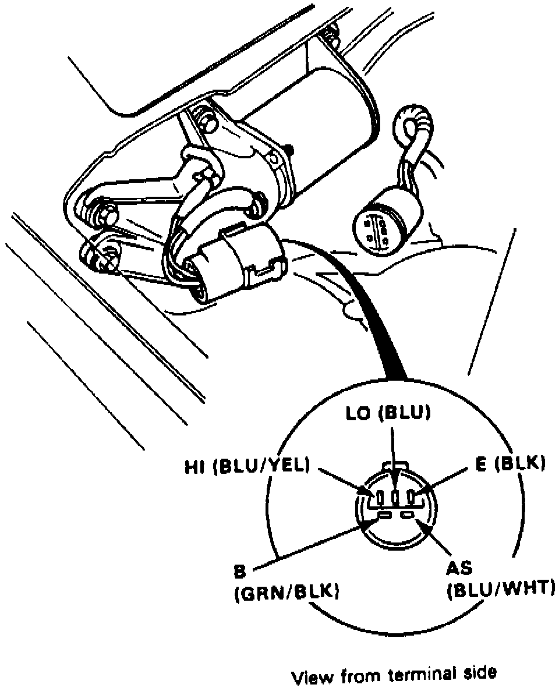

Front Wiper Motor Test
Fig. 10 Front Wiper Motor Connector:

1. Disconnect wiper motor electrical connector, Fig. 10.
2. Test motor operation as follows:
a. Connect positive battery voltage to green/black terminal and negative to blue terminal; motor should operate at low speed.
b. Connect positive battery voltage to green/black terminal and negative to blue/yellow terminal; motor should operate at high speed.
3. If motor operation is not as indicated, replace motor.